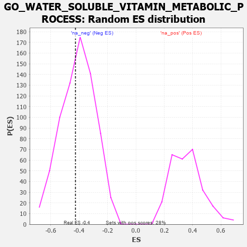

| | | Dataset | 7d |
| Phenotype | NoPhenotypeAvailable |
| Upregulated in class | na_neg |
| GeneSet | GO_WATER_SOLUBLE_VITAMIN_METABOLIC_PROCESS |
| Enrichment Score (ES) | -0.4264005 |
| Normalized Enrichment Score (NES) | -1.0416607 |
| Nominal p-value | 0.42127073 |
| FDR q-value | 0.8129005 |
| FWER p-Value | 1.0 |
Table: GSEA Results Summary
 Fig 1: Enrichment plot: GO_WATER_SOLUBLE_VITAMIN_METABOLIC_PROCESS
Fig 1: Enrichment plot: GO_WATER_SOLUBLE_VITAMIN_METABOLIC_PROCESS
Profile of the Running ES Score & Positions of GeneSet Members on the Rank Ordered List
| PROBE | GENE SYMBOL | GENE_TITLE | RANK IN GENE LIST | RANK METRIC SCORE | RUNNING ES | CORE ENRICHMENT | | 1 | MTRR | | | 154 | 1.217 | 0.1369 | No |
| 2 | PC | | | 1891 | 0.321 | -0.0400 | No |
| 3 | TPK1 | | | 2820 | 0.180 | -0.1335 | No |
| 4 | MMAA | | | 3781 | 0.030 | -0.2502 | No |
| 5 | PDXK | | | 4054 | -0.016 | -0.2823 | No |
| 6 | MTHFS | | | 4337 | -0.066 | -0.3093 | No |
| 7 | PCCB | | | 5147 | -0.237 | -0.3805 | No |
| 8 | PCCA | | | 5513 | -0.323 | -0.3849 | Yes |
| 9 | FOLR2 | | | 5563 | -0.336 | -0.3479 | Yes |
| 10 | CLYBL | | | 5619 | -0.350 | -0.3098 | Yes |
| 11 | PNPO | | | 5663 | -0.365 | -0.2683 | Yes |
| 12 | RGN | | | 6233 | -0.547 | -0.2696 | Yes |
| 13 | ABCD4 | | | 6349 | -0.597 | -0.2074 | Yes |
| 14 | MMAB | | | 6381 | -0.607 | -0.1334 | Yes |
| 15 | CUBN | | | 6624 | -0.727 | -0.0705 | Yes |
| 16 | PANK2 | | | 7736 | -1.866 | 0.0295 | Yes |
Table: GSEA details [plain text format]

Fig 2: GO_WATER_SOLUBLE_VITAMIN_METABOLIC_PROCESS: Random ES distribution
Gene set null distribution of ES for GO_WATER_SOLUBLE_VITAMIN_METABOLIC_PROCESS